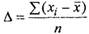
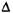
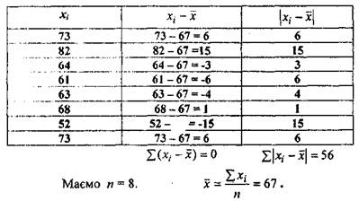
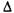
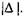
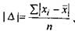
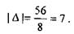
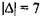
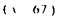

Середня величина, на яку вибіркові дані відрізняються від простої середньої, називають середнім відхиленням. Середнє відхилення позначають символом
 (4)
Приклад 1. Дано вибіркову сукупність: 73, 82, 64, 61, 63, 68, 52 та 73.
Знайти середнє відхилення Розв'язання. Обчислення середнього відхилення представлено у Таблиці 1.

Отже, середнє відхилення
Слід зауважити, що середнє відхилення вибіркових даних завжди дорівнює 0. Таким чином, виникає необхідність у знаходженні іншої числової характеристики, а саме абсолютної величини відхилення, тобто
Як показано у Таблиці 1, абсолютне значення середнього відхилення не реагує на знаки відповідних різниць. Отже,
 (5)
Згідно Таблиці 1,
Одержане значенняслужить індикаторною мірою степеня
розсіювання вибіркових даних навколо її середньою Зауважимо, що найбільше абсолютне знамення відхилення перевищує дисперсію.